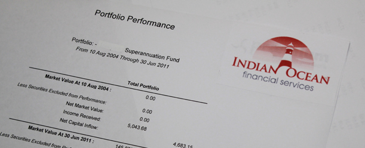

Portfolio Advantage |
|||||
|

Indian Ocean Financial Services portfolio administration platform gives clients the ability to track investments in real time while managing all aspects of their financial affairs. Using leading edge technology our Virtual Portfolio software is online based which means that our clients, our clients accountants and other advisers can get access to a range of portfolio reports, 24 hours a day, 7 days a week, on the web or on their mobile through our company website. Additional if required it is possible to add a live market data feed to gain access to a comprehensive range of market data on ASX listed equities, exchange traded options and warrants. Once implemented each party will receive a unique password to protect your privacy and each party can have their access limited or extended depending on the information required. SuitabilityOur Virtual Portfolio is highly suitable for individual investors or SMSF with exposure to a number of shares or managed funds and is designed to reduce cost by taking away those extra layers of third party fees that comes with the traditional Master trust or Wrap environment. Once set up, it will automatically update our clients:
A key advantage of our portfolio management is the sophisticated and high quality tax reporting capability. This feature allows your financial adviser to assess the exact parcels to sell to take advantage of the 1-year discounted CGT exemption to minimise any capital gain tax consequences or crystallise any loss if required.
The biggest advantage of using our administration platform is to have all our clients investments administrated into one place so the client can clearly see how they progress on their way to reach their objectives. They can have a mix of shares and managed funds from different providers in different platforms and our platform will neatly display these into asset classes and investment exposure. Finally the import function allows our software to update your banking transactions and historical data while the export function allows integration with all major accountants audit and tax return software to reduce auditing time to calculate the SMSF and or personal tax return. Buy and Sell managed fund exposure through your broker with the new Exchanged Traded Managed Fund option: Project AquaFrom February 2012 the Australian Stock Exchange will change the world of managed funds forever. To gain exposure to a managed fund a client normally will need to complete a product disclosure statement (PDS) and application form which require a bit of time to complete. When project Aqua becomes operational, this way of investing in managed funds will now have a major competitor. To gain exposure to the same managed fund via a PDS, it will be possible to buy and or sell this fund simply by placing an order with a broker, the same as our clients would with shares. The advantage of this is that by using the facilities under project aqua we will be able to make managed fund exposure cheaper as most of it will be automated. Our virtual administration system is ready to take advantage of project aqua and will reduce the set up cost and any manual work to keep your portfolio up to date.
|
Login Here
We can help you with ...
What is your Industry?
|
||||